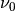
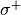

polar – Polarization simulations¶
Optical pumping simulations, meaning interaction between free atoms/ions and lasers can be performed using this module. Simulations are performed by generating a rate equation model, taking all given levels into account. Multi photon absorption is not included in the simulations.
Warning
The user interface created in the script OpticalPumping.py automates the input and information extraction for the Polar object, which can get complicated. Use of this GUI is advised if quick simulations have to be run!
Code documentation¶
Module author: Wouter Gins <wouter.gins@fys.kuleuven.be>
- class satlas.polar.BxRho(ground, excited, A, G, Il)[source]¶
BxRho calculation object.
Parameters: - ground (float) – Ground state energy in MHz. Used to calculate .
- excited (float) – Excited state energy in MHz. Used to calculate .
- A (float) – A eg value in s -1.
- G (float) – Inverted lifetime in s -1.
- Il (float) – Laser intensity in W/m 2.
- class satlas.polar.Polar(levels, laser, mode, spin, field, lifetimes, M, Ek, path, relaxationpath=0, frac=0, integrator='odeint')[source]¶
Class for calculating the polarization for optical pumping between several supplied levels and a given laser intensity and frequency. Assumes no decay below the ground state.
Parameters: - levels (list of Level objects) – Ordered from highest to lowest energy.
- laser (float) – Laser intensity, float in W/m 2. If supplied as a list of floats, that many lasers will be simulated.
- mode ({-1, 0, 1}) – Mode of the optical pumping; 1 = , -1 = , 0 = linear polarization. In the case of multiple lasers, a ist of modes has to be supplied.
- spin (integer or half-integer) – Nuclear spin.
- field (float) – Strength of the magnetic field in T.
- lifetimes (array_like) – Lifetimes of the excited states in s. NxN array, with N the length of the levels parameter. Ordering must match the supplied list of Level objects.
- M (float) – Mass of the particles of interest in kg.
- Ek (float) – Kinetic energy of the particles in J.
- path (float) – Length of the interaction region in m.
Other Parameters: - relaxationpath (float, optional) – The length of the path after the interaction with the laser. Models purely decay of the nuclei, without laser interaction. If set to 0 (default) this is not done.
- frac (float, optional) – Fraction of contamination of other laser modes. If set to 0 (default), no contamination of other laser modes is incorporated. Has to be between 0 and 1.
- integrator (string, optional) – Selects the integrator to use for solving the differential equations. Defaults to odeint, which is the LSODA solver. Possible other values are vode, zvode, lsoda, dopri5 and dop853. See the SciPy documentation for an overview of these integrators.
Returns: Callable object, returns the polarization in percent for a given frequency and population of the different levels in percent.
Return type: Polar
- __call__(f)[source]¶
Given frequency is supplied in MHz. A list of frequencies has to be supplied for each laser, so in the case of one laser,:
p = Polar(...) p(10)
is not valid, but:
p = Polar(...) p([10])
is. For each scan of a laser frequency, i.e. an entry in the list which is array like, the output gains an extra dimension, with the first N dimensions detailing the frequencies. The first entry in the last dimension is the polarization achieved, while the subsequent entries contain the population in the level ordered by decreasing energy (highest first, lowest last).
Parameters: f (list of (list of) floats) – The entries of the frequencies for which the laser(s) are set. Returns: resp – Array containing the polarization and population of the fine structure levels. Return type: NumPy array
- changeInitialPopulation(P)[source]¶
Change the initial population to the supplied one.
Parameters: P (list of population values.) – This list can be either for each magnetic substate, or for each fine-structure level. The latter case assumes equal distribution among the magnetic substates of each fine-structure level. Can be supplied as integer (e.g. 10 particles, 40 particles, ...) or as floats (0.10, 0.40). The input is automatically normalized.